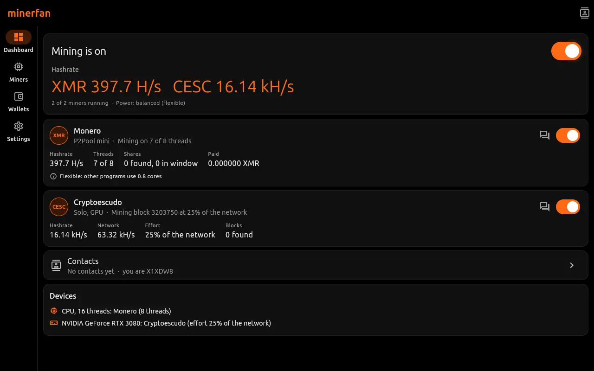
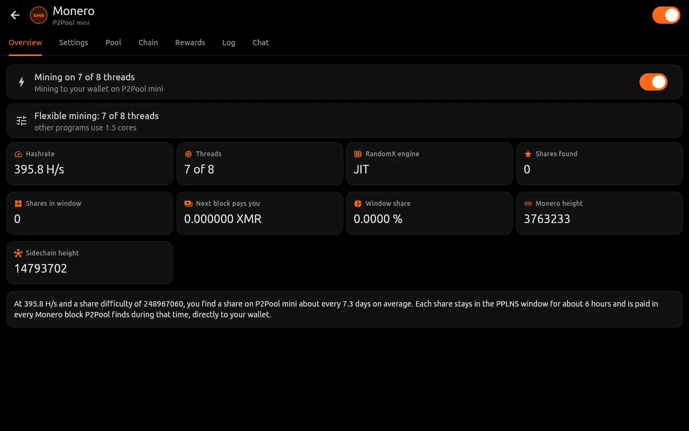
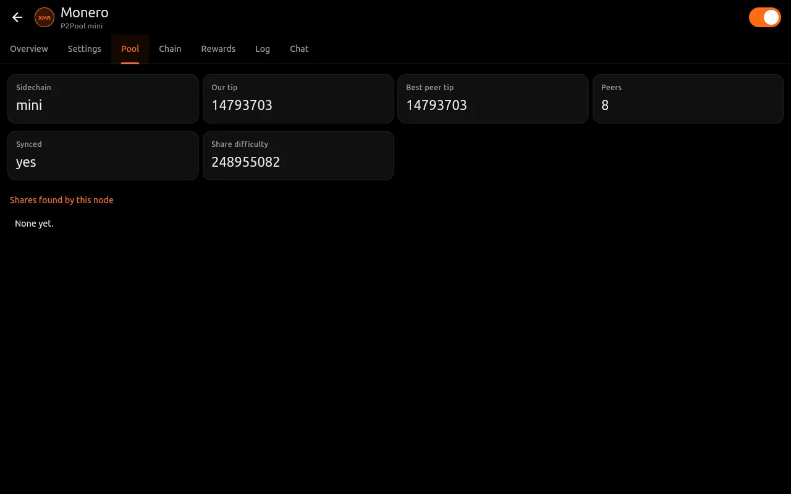
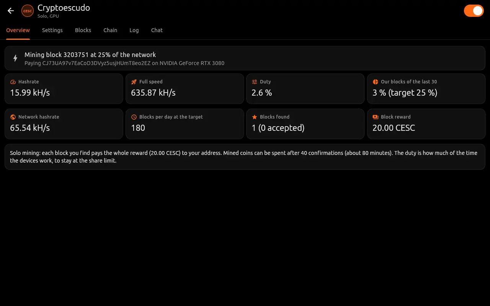
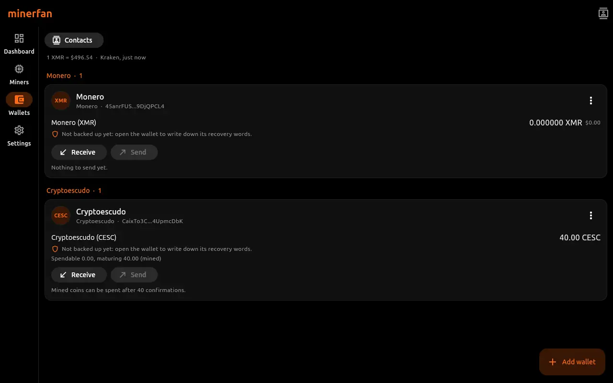
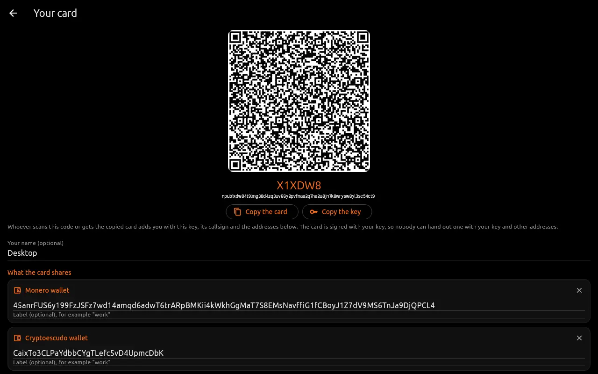
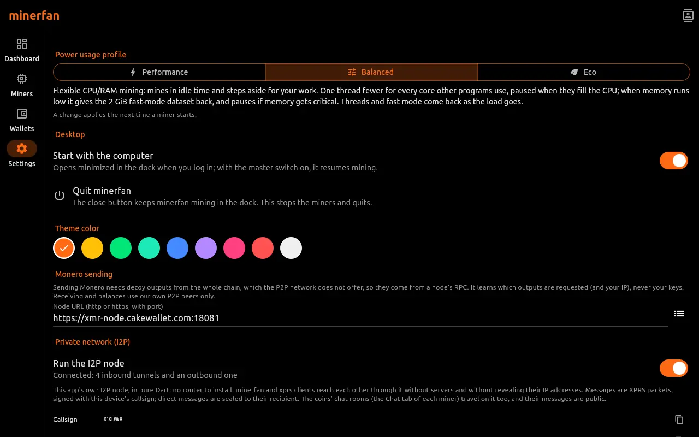
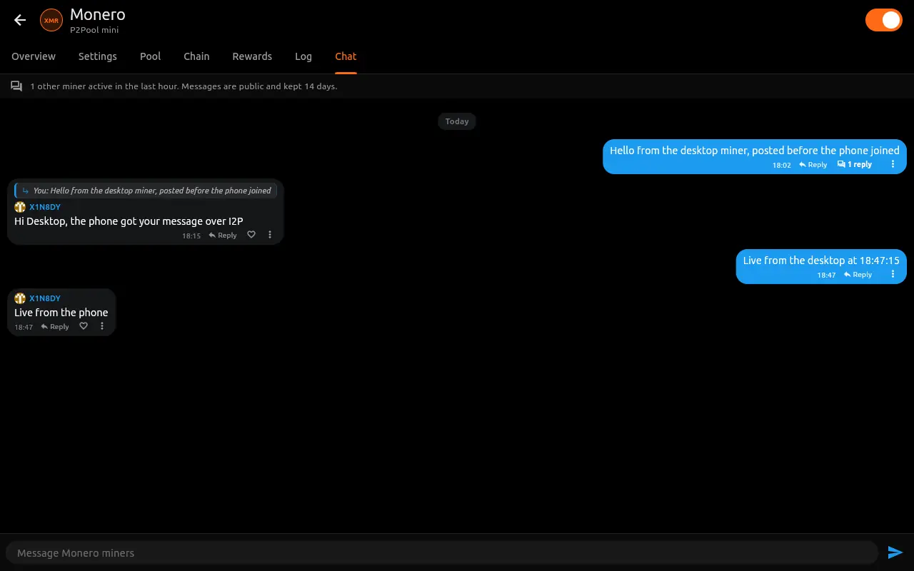
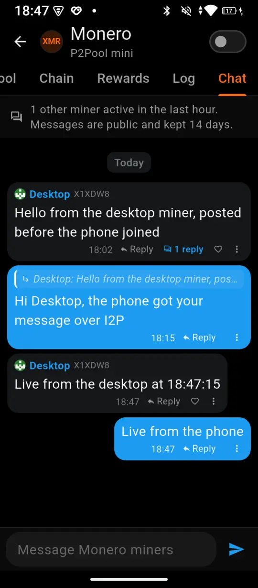

Monero XMR
- Algorithm
- RandomX
- Hardware
- CPU
- Mining
- P2Pool (mini, main or nano sidechain)
- Payouts
- Directly from Monero blocks to your wallet
Open source, for Linux and Android
minerfan runs each coin's node inside the app, so you don't install anything else or sign up with a pool. Rewards are paid to wallets kept on your device, and when you need the machine for other work, the miner slows down and gives it back.
Version 0.1.0, released under the BSD-3-Clause license.

These are the coins minerfan can mine in version 0.1.0. More will be added in later versions.
Missing a coin? Suggest it.
For coins with a small network, an effort limit keeps your hashrate to a share of it that you choose, so a single fast GPU does not take over the chain.
Each coin's node runs inside minerfan. Found blocks pay your address directly, without a pool operator in between or a withdrawal to wait for.
A CPU coin and a GPU coin can run at the same time. GPU mining uses OpenCL through your existing graphics driver, on desktops and on phones that allow it.
In the balanced profile the miner drops a thread for each core other programs are using and frees memory when it gets low. Thermal control slows it down on hot laptops and phones.
A wallet for each coin is created the first time you open the app, and the miners pay into it. Keys are stored encrypted on the device, with recovery words you can write down.
Contacts are identified by a public key and a short callsign. Your own card can be shared as a QR code, signed with your key, so the addresses on it cannot be changed by someone else.
Miners of the same coin can talk in a room that runs over the app's I2P node, with no central server. Members keep the last 14 days of messages, which is also what new members see.
Miners, nodes, wallets and the I2P router are written in Dart and Flutter and ship inside minerfan. It does not download or start any other program.
From a Linux desktop with an RTX 3080 and an Android phone, both running minerfan 0.1.0.








Chat room on desktop and phone. The phone joined after the first message was posted and received it from the desktop. The two devices connected through the public I2P network, not the local network.
Requires Android 7.0 or newer. GPU mining works on phones whose manufacturer allows apps to use OpenCL.
Download APKFor 64-bit PCs with GTK 3. GPU mining uses the OpenCL driver of your graphics card.
Download tar.gztar xzf minerfan-linux-x64.tar.gz
mv minerfan ~/.local/opt/
~/.local/opt/minerfan/minerfanThe first start adds a launcher and a dock icon.
Checksums and earlier versions are on the releases page. Windows and macOS builds can be made from the source code.
New coins are added based on requests. To suggest one, open an issue on GitHub using the coin request form:
Coins with a permissively licensed node are the easiest to add, since minerfan runs its own implementation of each coin's network.
With P2Pool, shares you find stay in the payout window for about six hours on the mini sidechain. When any P2Pool miner finds a Monero block, that block pays every wallet with shares in the window. With solo mining, each block you find pays its full reward to you.
Chat messages are public and shown with your callsign; room members keep them for 14 days. Mining connects only to the networks of the coins you mine.
Mining uses a lot of power and produces heat. It only starts when you turn it on, and the eco profile uses half the CPU threads.
minerfan is released under the BSD-3-Clause license. Code ported from other projects keeps its original permissive license; the list is in the repository.